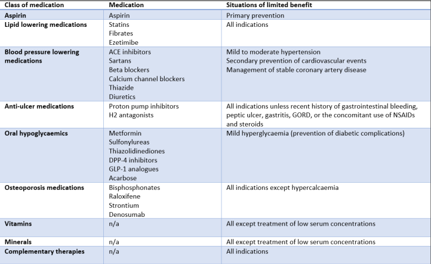

This tool is designed to support clinicians in applying deprescribing principles in patients approaching the end of their life.
You will first review key learning points on deprescribing and anticholinergic burden before working through realistic case scenarios.
Deprescribing is the planned reduction or stopping of medications that may no longer provide meaningful benefit, may cause harm, or no longer align with a patient’s goals of care.
In patients with limited prognosis, many preventative medications have a time-to-benefit that exceeds life expectancy. Continuing these treatments can increase pill burden, adverse drug reactions, treatment complexity, and medication-related harm.
The OncPal deprescribing guideline highlights several drug classes that may have limited benefit in advanced cancer and palliative care settings, depending on indication and prognosis.

Anticholinergic burden refers to the cumulative effect of taking one or more medicines with anticholinergic activity.
Anticholinergic medications may worsen:
For more detailed ACB information and individual medication scores, use the calculator below:
Open ACB CalculatorMs C, 69 – Metastatic breast cancer (lung), prognosis < 6 months.
Q1 – Which medications should be considered for deprescribing in this patient?
Q2 – What is Ms C’s total Anticholinergic Cognitive Burden (ACB) score?
Q3 – What does RCT evidence show about stopping statins in patients with limited life expectancy?
Mr A, 78 – Metastatic prostate cancer, life expectancy < 6 months.
Q1 – Deprescribing targets: Which medications should be considered for deprescribing in this patient?
Q2 – ACB calculation: What is Mr A’s Anticholinergic Cognitive Burden (ACB) score?
Q3 – In a frail older adult with limited prognosis, which statement aligns with NICE guidance on glycaemic management?
Q1 – Deprescribing targets: Which medications could be considered for deprescribing?
Q2 – ACB calculation: What is Mr C’s ACB score?
Q3 – Literature-based: Evidence for stopping preventive medications in frail older adults:
Q4 – What approach to preventive medications in adults with limited life expectancy is appropriate?
Q1 – Deprescribing targets: Which high-ACB / high-risk medications should be considered for deprescribing?
Q2 – ACB calculation: What is Mrs D’s total ACB score?
Q3 – For older adults with dementia and high ACB, NICE recommends:
Q4 – What would be the most appropriate deprescribing strategy for amitriptyline?